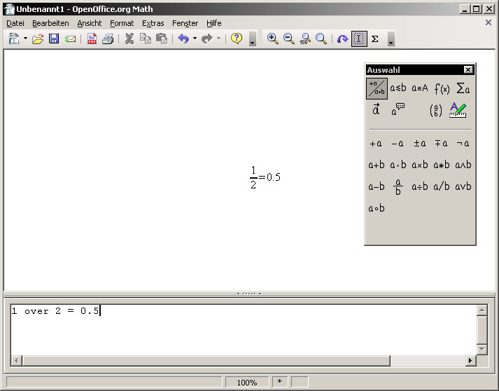
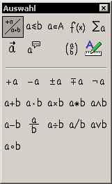
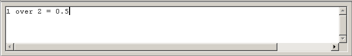

| [zurück] | [Hauptmenü] | [weiter] |

Abb. 1: Hauptansicht
Abb. 2: Menü
Das Menü enthält alle wichtigen
Funktionen und Einstellungsoptionen. Für die Bedienung des
Formel-Programmes ist es aber nicht so wichtig, die Kommandoeingabe
und das Befehlsauswahlfeld sind weitaus wichtiger.
Abb. 3: Symbolleiste Standard
Das ist die Standardleiste. Wie in den anderen OpenOffice.org-Programmkomponenten hält auch sie schnell verfügbare Icons für das Öffnen, Speichern und Drucken sowie Ausschneiden, Kopieren und Einfügen zur Verfügung.
Abb. 4: Symbolleiste Werkzeuge
Die Leiste Werkzeuge ist in 2 Bereiche geteilt. Der obere Teil mit den Lupen ist für die Vergrößerung
zuständig. Es lässt sich zwischen vergrößerter
und verkleinerter Ansicht sowie zwischen einer Totalansicht und
einer 1:1 - Ansicht wählen.
Im unteren Bereich findet man das Icon "Aktualisieren". Damit kann man die im Kommandofeld
eingetippten Formeln (falls noch nicht automatisch geschehen) im Hauptfenster anzeigen lassen, darunter das Icon, das den
interaktiven Cursor (damit findet man im Formel-Code schneller das Gesuchte) aktiviert.
Zuletzt kommt das Sigma-Zeichen, das für das Einfügen von
Sonderzeichen da ist.

Abb. 5: Auswahl des Kommandos
Die Kommandoauswahl dient dazu, einige Funktionen direkt per Mausklick in das Kommandofeld einzufügen.

Abb. 6: Kommandofeld
Dieses Feld ist das wichtigste für das Formel-Programm. Es
beinhaltet den strukturellen Informations-Code für das was
dargestellt werden soll. Diese erste Einführung
beschäftigt sich hauptsächlich damit, wie man was wie
darstellen kann.
Das Kontexmenü des Kommandofensters (Rechtsklick ins Weiße des Feldes)
bietet nicht nur alle Funktionen des Auswahlbereiches, sondern auch einige,
die im Auswahlbereich nicht enthalten sind. Den vollen Funktionsumfang können Sie
in der Online-Hilfe unter dem Stichpunkt 'Formeln; Referenztabellen' nachschlagen.
| [zurück] | [Hauptmenü] | [weiter] |
© Copyright 2003, Harald Schilly
This documentation is part of "Erste Schritte: OpenOffice.org Textdokument", which is released
under the terms of the PDL.
For full copyright and license info read the index page.